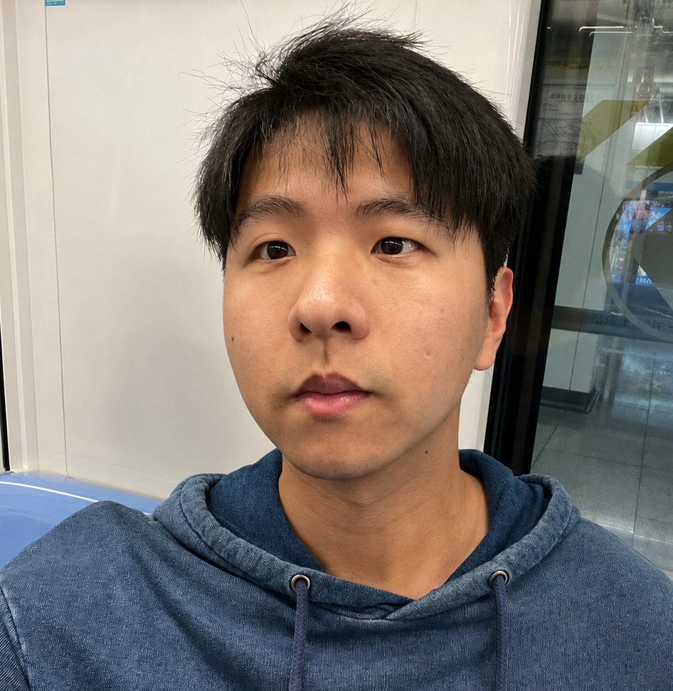

- Office: OSU Math Tower 330
- Address: 100 Math Tower, 231 West 18th Avenue, Columbus, OH 43210-1174
- Email: chen.11050 [at] osu [dot] edu
Yuan Chen
I am a Ph.D. candidate in the Department of Mathematics at The Ohio State University, advised by Prof. Dongbin Xiu.
My research interests lie at the intersection of applied and computational mathematics, machine learning, and statistics. My recent work focuses on generative machine learning methods for scientific computing, particularly the data-driven recovery of stochastic dynamical systems.
I am also interested in traditional numerical analysis for partial differential equations, including the discontinuous Galerkin (dG) method and the finite element method. I work closely with Prof. Yulong Xing, Prof. Xu Zhang, and Prof. Songming Hou.